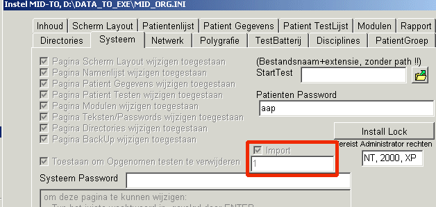
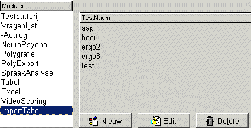
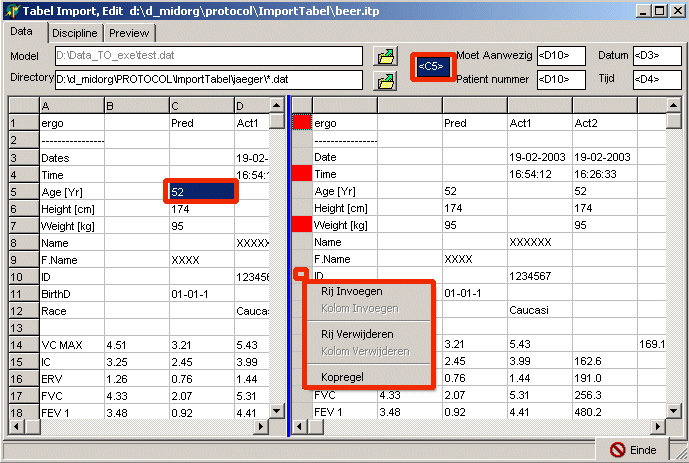
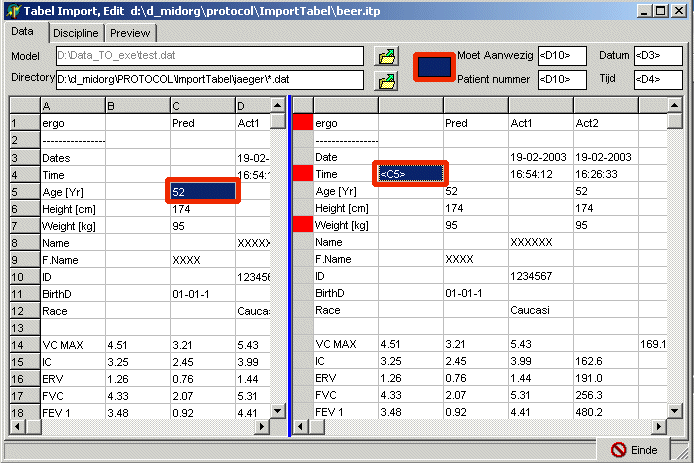
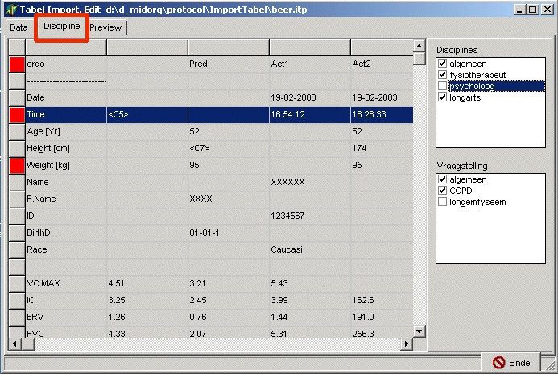
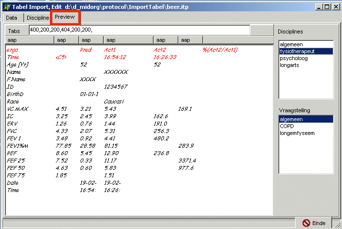
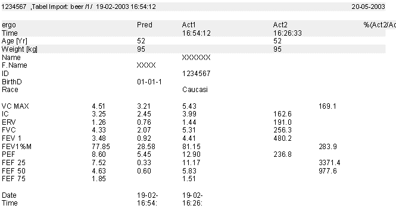
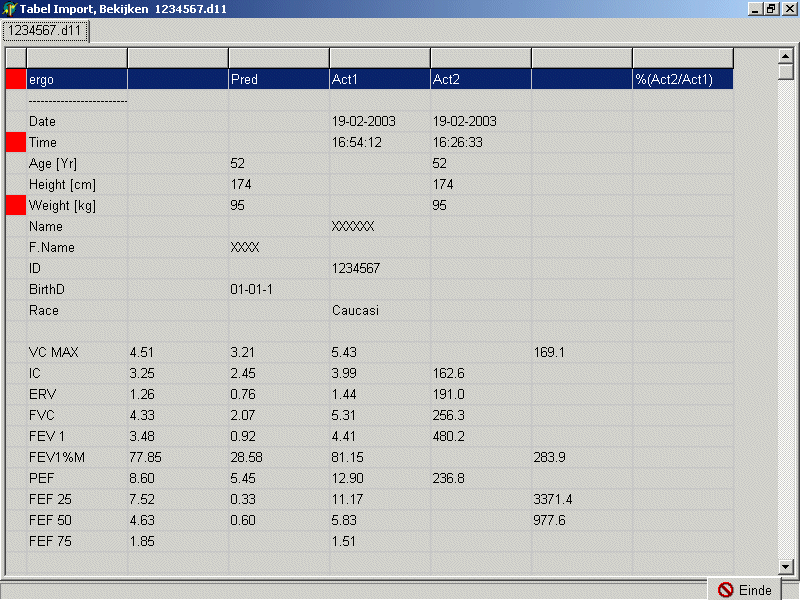

Tabel Import
Het automatisch importeren van tabellen in de TestOrganizer, teneinde deze in het patient rapport te kunnen integreren.
Buiten de TestOrganizer worden tabellen gemaakt (door mens of machine), welke in een bekende directory worden geplaatst.
De TestOrganizer kijkt op regelmatige tijdstippen in deze directory, zoekt naar de opgegeven bestanden en importeert de gegevens op een voor de TestOrganizer leesbare manier.
Het protocol (in de lijst "Import Tabel"), bevat gegevens over
Eén tabel met invoergegevens, kan tegelijkertijd middels meerdere protocollen worden geimporteerd. Hierdoor kunnen eenvoudig gegevens worden gesplitst.
Via Instel > Systeem kan de tabelimport worden aan en uitgeschakeld (het vakje "Import"). Na een wijziging van deze instelling dient de TestOrganizer afgesloten te worden en opnieuw gestart om de nieuwe instelling te effectueren. Onder het vakje Import kan de tijd in minuten worden opgegeven, waarop de TestOrganizer naar bestanden gaat zoeken.
BELANGRIJK: het zoeken naar tabelbestanden mag slechts op 1 PC in het netwerk worden uitgevoerd.
BELANGRIJK: de PC die de tabellen moet zoeken moet voldoende ruimte krijgen om te zoeken

Net als ieder ander protocol, is er ook een lijst van tabel import protocollen.
Deze kunnen opdezelfde manier worden gewijzigd als de overige protocollen.
Omdat de protocollen automatisch hun werk doen, kan een import-tabel-protocol uiteraard niet naar een patient worden overgehaald.

Hieronder is het edit venster afgebeeld. De belangrijkste elementen zijn de 2 tabellen, links de voorbeeld tabel (het "Model"), rechts de geïmporteerde tabel, zoals die in de TestOrganizer geplaatst zal worden.
De voorbeeld tabel is niet noodzakelijk, doch wel erg handig !! Het liefst neemt men voor de voorbeeldtabel het meest uitgebreide voorbeeld, dus zoveel mogelijk gegevens ingevuld. Het is verstandig een voorbeeltabel in de programma directory te bewaren.
In principe kan de geïmporteerde tabel gewoon met het toetsenbord worden ingevuld. In iedere cel van de tabel kan of een vaste tekststring staan of een verwijzing naar een cel van het bronbestand (vergelijkbaar met Excel). Een verwijzing wordt aangegeven door er driehoekige haken omheen te zetten., bijv "<C5>" verwijst naar de brontabel, derde kolom, vijfde rij.

Voor het plaatsen van verwijzingen is nog een extra hulpmiddel toegevoegd:

Door te klikken op de linker rij of de bovenste rij, wordt een menu getoond, waarin regels en kolommen kunnen worden verwijderd of toegevoegd.
Tevens kan in dit menu een regel als "kopregel" worden gedefinieerd (de linker cel kleurt dan rood). Kopregels worden in het rapport van een grijze achtergrond voorzien.
Conditioneel Rapport Instellingen
Hieronder een voorbeeld van het instellen van de dicipline en vraagstelling afhankelijkheid.
De inhoud van de afzonderlijke cellen kan hier niet worden gewijzgd.
Selekteer een regel en geef in de 2 blokken ernaast aan wanneer deze regel moet worden weergegeven.

Door in de 2 rechterblokken, discipline en vraagstelling te selecteren, kan worden gezien wat er wordt weergegeven in het rapport. Het feitelijke font wordt pas bij het rapport bepaald.
Tabs kunnen op 2 manieren worden ingesteld


